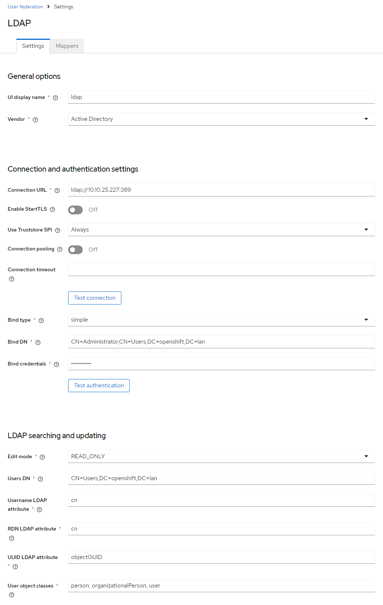
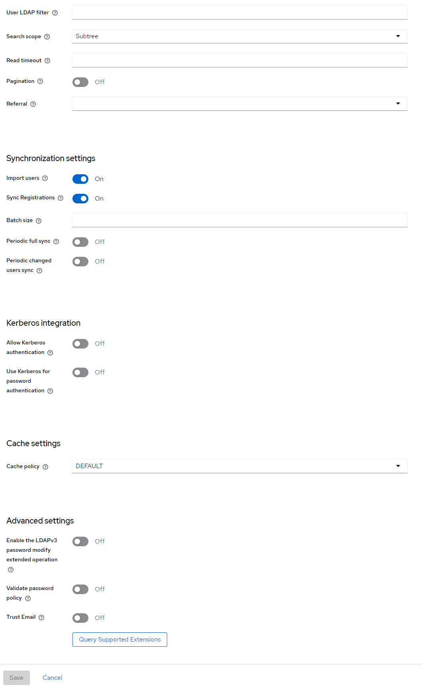
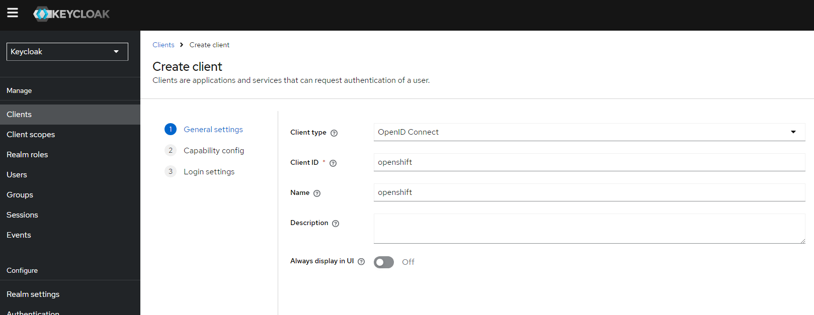
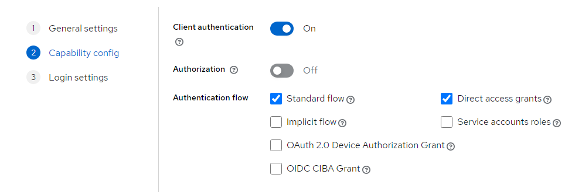
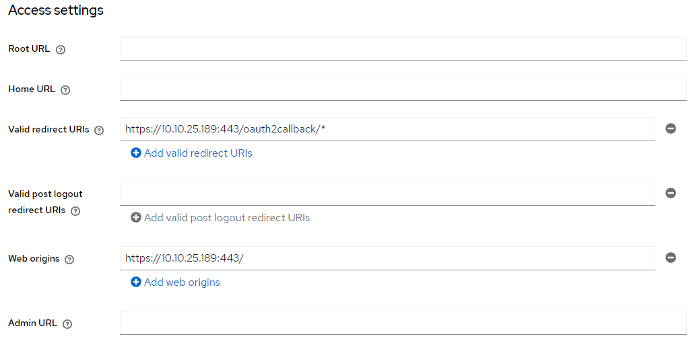
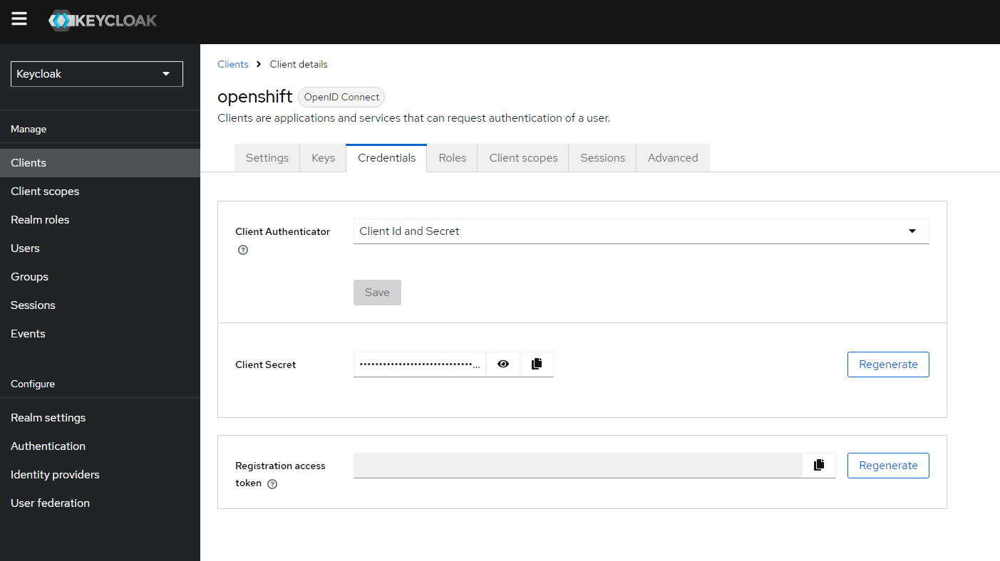

Testing Keycloak
Concepts
Overview
Keycloak: An open-source Identity and Access Management solution. It supports standard protocols like OIDC and SAML for authentication and authorization.
OpenID Connect (OIDC): A simple identity layer on top of the OAuth 2.0 protocol, allowing clients to verify the identity of end-users based on the authentication performed by an Authorization Server.
OpenShift: A Kubernetes distribution by Red Hat that includes a suite of developer and operational tools for containerized applications.
Active Directory (AD): A directory service by Microsoft for Windows domain networks.
Components Involved
- Keycloak Server:
- Acts as the Identity Provider (IdP).
- Connects to Active Directory to authenticate users.
-
Issues tokens (ID token, access token) using OIDC protocol.
-
OpenShift Cluster:
- Acts as the Service Provider (SP).
- Uses Keycloak for authenticating users who want to access the OpenShift console.
-
Configured to use OIDC with Keycloak as the IdP.
-
Active Directory (AD):
- Acts as the user store.
- Keycloak uses AD to verify user credentials.
Detailed Steps
Step 1: Set Up Keycloak
- Install and Configure Keycloak:
-
Ensure Keycloak is installed and running on your server (
http://10.10.25.199:8080). -
Create a Realm:
- A realm in Keycloak is equivalent to a tenant. It allows you to manage a set of users, credentials, roles, and groups.
-
For simplicity, use the
masterrealm or create a new one if needed. -
Create a Client in Keycloak:
- A client represents an application that will use Keycloak for authentication.
- Client ID:
openshift - Client Protocol:
openid-connect - Access Type:
confidential - Root URL:
https://10.10.25.189(OpenShift URL) - Valid Redirect URIs:
https://10.10.25.189/* -
Web Origins:
https://10.10.25.189 -
Set Up Client Credentials:
-
Go to the
Credentialstab and note theClient Secret. This secret will be used by OpenShift to authenticate against Keycloak. -
Configure User Federation (Optional):
- If you need Keycloak to use Active Directory for user authentication, configure the LDAP provider under
User Federation.
Step 2: Set Up OpenShift
- Create a Secret in OpenShift for Keycloak Client Secret:
-
Use the OpenShift CLI to store the Keycloak client secret securely.
bash oc create secret generic keycloak-client-secret \ --from-literal=clientSecret=<your-keycloak-client-secret> \ -n openshift-config -
Configure OpenShift OAuth to Use Keycloak:
-
Create an OAuth configuration file (
oauth.yaml) with the following content: ```yaml apiVersion: config.openshift.io/v1 kind: OAuth metadata: name: cluster spec: identityProviders:- name: keycloak
mappingMethod: claim
type: OpenID
openID:
clientID: openshift
clientSecret:
name: keycloak-client-secret
issuer: https://10.10.25.199/auth/realms/master
claims:
preferredUsername:
- preferred_username name:
- name email:
- email extraScopes: [] extraAuthorizeParameters: {} userInfoURL: https://10.10.25.199/auth/realms/master/protocol/openid-connect/userinfo ```
- name: keycloak
mappingMethod: claim
type: OpenID
openID:
clientID: openshift
clientSecret:
name: keycloak-client-secret
issuer: https://10.10.25.199/auth/realms/master
claims:
preferredUsername:
-
Apply the OAuth Configuration:
- Use the OpenShift CLI to apply the configuration.
bash oc apply -f oauth.yaml
How It Works Together
- User Initiates Login:
-
When a user attempts to log in to the OpenShift console (
https://10.10.25.189), they are redirected to the Keycloak login page. -
Authentication with Keycloak:
- The user enters their credentials on the Keycloak login page.
-
Keycloak authenticates the user against its internal user store or Active Directory if configured.
-
Token Issuance:
-
Upon successful authentication, Keycloak issues an ID token and access token to the user.
-
Redirect Back to OpenShift:
-
Keycloak redirects the user back to the OpenShift console with the tokens.
-
Token Validation:
- OpenShift validates the tokens with Keycloak.
-
If the tokens are valid, the user is granted access to the OpenShift console.
-
Access Granted:
- The user is now logged in and can use OpenShift based on their assigned roles and permissions.
Summary
- Keycloak manages user authentication and issues tokens.
- OpenShift uses Keycloak tokens to authenticate users.
- Active Directory (if configured) serves as the backend user store for Keycloak.
This setup allows centralized authentication using Keycloak, leveraging existing user directories like Active Directory, and providing Single Sign-On (SSO) capabilities for accessing OpenShift.
Feel free to ask if you have any specific questions or need further clarification on any of these steps!
Keycloak Setup
Integrate with Active Directory
- I built out active directory apart from this tutorial. Just remember to not add certificate services. You only want active directory then I added a user.
- In Keycloak under user federation, add an LDAP provider with the following:
- Warning, don't make the mistake I did with AD. If you see
Network response was not okyou probably misconfigured the DN. See this post


Configure the Client
- After you run the test to make sure everything works, you'll need to set up an OpenShift client

- In capability config make sure you enable
Client authentication. You'll need that to obtain credentials later for OpenShift.

- I used the following access settings:

Configure OpenShift
- Get your client secret from the OpenShift client you created
- If the credentials tab is missing it is because you didn't set
Client authenticationto on.

- Configure the secret in OpenShift
oc create secret generic keycloak-client-secret \
--from-literal=clientSecret=j2gcpig9Wd1bfH3nZXon56NYKDhTbV0o \
-n openshift-config
- Next create the following file
oauth.yamland then runoc apply -f oauth.yaml
apiVersion: config.openshift.io/v1
kind: OAuth
metadata:
name: cluster
spec:
identityProviders:
- name: keycloak
mappingMethod: claim
type: OpenID
openID:
clientID: openshift
clientSecret:
name: keycloak-client-secret
issuer: https://10.10.25.199/auth/realms/master
claims:
preferredUsername:
- preferred_username
name:
- name
email:
- email
How to Setup Keycloak in Docker
Note: I was ultra lazy about permissions for the lab. I ran into a problem where despite 443 being whitelisted in firewalld in all zones, firewalld would block the port anyway. I didn't spend extra time troubleshooting - I just turned off firewalld.
- Remove Existing Containers:
bash
docker rm -f keycloak postgres
- Create a Docker Network:
bash
docker network create keycloak-network
- Ensure Correct Directory Permissions:
bash
sudo mkdir -p /opt/postgres /opt/keycloak/data/transaction-logs/ShadowNoFileLockStore/defaultStore
sudo chown -R $(whoami):$(whoami) /opt/postgres /opt/keycloak
sudo chmod -R 755 /opt/postgres /opt/keycloak
- Run PostgreSQL Container:
bash
docker run -d --name postgres \
--network keycloak-network \
-v /opt/postgres/:/var/lib/postgresql/data \
-e POSTGRES_DB=keycloak \
-e POSTGRES_USER=keycloak \
-e POSTGRES_PASSWORD=password \
-p 5432:5432 \
postgres:latest
- Run Keycloak Container as Root:
bash
docker run -d --name keycloak \
--network keycloak-network \
--user root \
-v /opt/keycloak/data:/opt/keycloak/data \
-e KEYCLOAK_ADMIN=admin \
-e KEYCLOAK_ADMIN_PASSWORD=admin \
-e KC_DB=postgres \
-e KC_DB_URL=jdbc:postgresql://postgres:5432/keycloak \
-e KC_DB_USERNAME=keycloak \
-e KC_DB_PASSWORD=password \
-p 8080:8080 \
-p 443:8443 \
quay.io/keycloak/keycloak:25.0.1 start-dev
After running these commands, you can check the status of the containers to ensure everything is running properly:
docker ps
docker logs keycloak
Access Keycloak
Keycloak should now be accessible at http://localhost:8080. You can log in using the admin credentials you specified (admin/admin).
By ensuring both containers are on the same network, Keycloak will be able to communicate with PostgreSQL correctly.